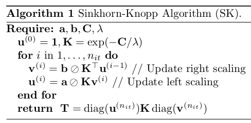

Note
Go to the end to download the full example code.
Introduction to Optimal Transport with Python
This example gives an introduction on how to use Optimal Transport in Python.
# Author: Remi Flamary, Nicolas Courty, Aurelie Boisbunon
#
# License: MIT License
# sphinx_gallery_thumbnail_number = 1
POT Python Optimal Transport Toolbox
POT installation
Install with pip:
pip install pot
Install with conda:
conda install -c conda-forge pot
Import the toolbox
import numpy as np # always need it
import pylab as pl # do the plots
import ot # ot
import time
Getting help
Online documentation : https://pythonot.github.io/all.html
Or inline help:
help(ot.dist)
Help on function dist in module ot.utils:
dist(x1, x2=None, metric='sqeuclidean', p=2, w=None)
Compute distance between samples in :math:`\mathbf{x_1}` and :math:`\mathbf{x_2}`
.. note:: This function is backend-compatible and will work on arrays
from all compatible backends.
Parameters
----------
x1 : array-like, shape (n1,d)
matrix with `n1` samples of size `d`
x2 : array-like, shape (n2,d), optional
matrix with `n2` samples of size `d` (if None then :math:`\mathbf{x_2} = \mathbf{x_1}`)
metric : str | callable, optional
'sqeuclidean' or 'euclidean' on all backends. On numpy the function also
accepts from the scipy.spatial.distance.cdist function : 'braycurtis',
'canberra', 'chebyshev', 'cityblock', 'correlation', 'cosine', 'dice',
'euclidean', 'hamming', 'jaccard', 'kulczynski1', 'mahalanobis',
'matching', 'minkowski', 'rogerstanimoto', 'russellrao', 'seuclidean',
'sokalmichener', 'sokalsneath', 'sqeuclidean', 'wminkowski', 'yule'.
p : float, optional
p-norm for the Minkowski and the Weighted Minkowski metrics. Default value is 2.
w : array-like, rank 1
Weights for the weighted metrics.
Returns
-------
M : array-like, shape (`n1`, `n2`)
distance matrix computed with given metric
First OT Problem
We will solve the Bakery/Cafés problem of transporting croissants from a number of Bakeries to Cafés in a City (in this case Manhattan). We did a quick google map search in Manhattan for bakeries and Cafés:
{kind=link}
We extracted from this search their positions and generated fictional production and sale number (that both sum to the same value).
We have access to the position of Bakeries bakery_pos and their
respective production bakery_prod which describe the source
distribution. The Cafés where the croissants are sold are defined also by
their position cafe_pos and cafe_prod, and describe the target
distribution. For fun we also provide a
map Imap that will illustrate the position of these shops in the city.
Now we load the data
data = np.load('../data/manhattan.npz')
bakery_pos = data['bakery_pos']
bakery_prod = data['bakery_prod']
cafe_pos = data['cafe_pos']
cafe_prod = data['cafe_prod']
Imap = data['Imap']
print('Bakery production: {}'.format(bakery_prod))
print('Cafe sale: {}'.format(cafe_prod))
print('Total croissants : {}'.format(cafe_prod.sum()))
Bakery production: [31. 48. 82. 30. 40. 48. 89. 73.]
Cafe sale: [82. 88. 92. 88. 91.]
Total croissants : 441.0
Plotting bakeries in the city
Next we plot the position of the bakeries and cafés on the map. The size of the circle is proportional to their production.
pl.figure(1, (7, 6))
pl.clf()
pl.imshow(Imap, interpolation='bilinear') # plot the map
pl.scatter(bakery_pos[:, 0], bakery_pos[:, 1], s=bakery_prod, c='r', ec='k', label='Bakeries')
pl.scatter(cafe_pos[:, 0], cafe_pos[:, 1], s=cafe_prod, c='b', ec='k', label='Cafés')
pl.legend()
pl.title('Manhattan Bakeries and Cafés')
Text(0.5, 1.0, 'Manhattan Bakeries and Cafés')
Cost matrix
We can now compute the cost matrix between the bakeries and the cafés, which will be the transport cost matrix. This can be done using the ot.dist function that defaults to squared Euclidean distance but can return other things such as cityblock (or Manhattan distance).
C = ot.dist(bakery_pos, cafe_pos)
labels = [str(i) for i in range(len(bakery_prod))]
f = pl.figure(2, (14, 7))
pl.clf()
pl.subplot(121)
pl.imshow(Imap, interpolation='bilinear') # plot the map
for i in range(len(cafe_pos)):
pl.text(cafe_pos[i, 0], cafe_pos[i, 1], labels[i], color='b',
fontsize=14, fontweight='bold', ha='center', va='center')
for i in range(len(bakery_pos)):
pl.text(bakery_pos[i, 0], bakery_pos[i, 1], labels[i], color='r',
fontsize=14, fontweight='bold', ha='center', va='center')
pl.title('Manhattan Bakeries and Cafés')
ax = pl.subplot(122)
im = pl.imshow(C, cmap="coolwarm")
pl.title('Cost matrix')
cbar = pl.colorbar(im, ax=ax, shrink=0.5, use_gridspec=True)
cbar.ax.set_ylabel("cost", rotation=-90, va="bottom")
pl.xlabel('Cafés')
pl.ylabel('Bakeries')
pl.tight_layout()
The red cells in the matrix image show the bakeries and cafés that are further away, and thus more costly to transport from one to the other, while the blue ones show those that are very close to each other, with respect to the squared Euclidean distance.
Solving the OT problem with ot.emd
The function returns the transport matrix, which we can then visualize (next section).
Transportation plan visualization
A good visualization of the OT matrix in the 2D plane is to denote the
transportation of mass between a Bakery and a Café by a line. This can easily
be done with a double for loop.
In order to make it more interpretable one can also use the alpha
parameter of plot and set it to alpha=G[i,j]/G.max().
# Plot the matrix and the map
f = pl.figure(3, (14, 7))
pl.clf()
pl.subplot(121)
pl.imshow(Imap, interpolation='bilinear') # plot the map
for i in range(len(bakery_pos)):
for j in range(len(cafe_pos)):
pl.plot([bakery_pos[i, 0], cafe_pos[j, 0]], [bakery_pos[i, 1], cafe_pos[j, 1]],
'-k', lw=3. * ot_emd[i, j] / ot_emd.max())
for i in range(len(cafe_pos)):
pl.text(cafe_pos[i, 0], cafe_pos[i, 1], labels[i], color='b', fontsize=14,
fontweight='bold', ha='center', va='center')
for i in range(len(bakery_pos)):
pl.text(bakery_pos[i, 0], bakery_pos[i, 1], labels[i], color='r', fontsize=14,
fontweight='bold', ha='center', va='center')
pl.title('Manhattan Bakeries and Cafés')
ax = pl.subplot(122)
im = pl.imshow(ot_emd)
for i in range(len(bakery_prod)):
for j in range(len(cafe_prod)):
text = ax.text(j, i, '{0:g}'.format(ot_emd[i, j]),
ha="center", va="center", color="w")
pl.title('Transport matrix')
pl.xlabel('Cafés')
pl.ylabel('Bakeries')
pl.tight_layout()
The transport matrix gives the number of croissants that can be transported from each bakery to each café. We can see that the bakeries only need to transport croissants to one or two cafés, the transport matrix being very sparse.
OT loss and dual variables
The resulting wasserstein loss loss is of the form:
where \(\gamma\) is the optimal transport matrix.
Wasserstein loss (EMD) = 10838179.41
Regularized OT with Sinkhorn
The Sinkhorn algorithm is very simple to code. You can implement it directly using the following pseudo-code
{kind=link}
In this algorithm, \(\oslash\) corresponds to the element-wise division.
An alternative is to use the POT toolbox with ot.sinkhorn
Be careful of numerical problems. A good pre-processing for Sinkhorn is to
divide the cost matrix C by its maximum value.
Algorithm
# Compute Sinkhorn transport matrix from algorithm
reg = 0.1
K = np.exp(-C / C.max() / reg)
nit = 100
u = np.ones((len(bakery_prod), ))
for i in range(1, nit):
v = cafe_prod / np.dot(K.T, u)
u = bakery_prod / (np.dot(K, v))
ot_sink_algo = np.atleast_2d(u).T * (K * v.T) # Equivalent to np.dot(np.diag(u), np.dot(K, np.diag(v)))
# Compute Sinkhorn transport matrix with POT
ot_sinkhorn = ot.sinkhorn(bakery_prod, cafe_prod, reg=reg, M=C / C.max())
# Difference between the 2
print('Difference between algo and ot.sinkhorn = {0:.2g}'.format(np.sum(np.power(ot_sink_algo - ot_sinkhorn, 2))))
Difference between algo and ot.sinkhorn = 2.1e-20
Plot the matrix and the map
print('Min. of Sinkhorn\'s transport matrix = {0:.2g}'.format(np.min(ot_sinkhorn)))
f = pl.figure(4, (13, 6))
pl.clf()
pl.subplot(121)
pl.imshow(Imap, interpolation='bilinear') # plot the map
for i in range(len(bakery_pos)):
for j in range(len(cafe_pos)):
pl.plot([bakery_pos[i, 0], cafe_pos[j, 0]],
[bakery_pos[i, 1], cafe_pos[j, 1]],
'-k', lw=3. * ot_sinkhorn[i, j] / ot_sinkhorn.max())
for i in range(len(cafe_pos)):
pl.text(cafe_pos[i, 0], cafe_pos[i, 1], labels[i], color='b',
fontsize=14, fontweight='bold', ha='center', va='center')
for i in range(len(bakery_pos)):
pl.text(bakery_pos[i, 0], bakery_pos[i, 1], labels[i], color='r',
fontsize=14, fontweight='bold', ha='center', va='center')
pl.title('Manhattan Bakeries and Cafés')
ax = pl.subplot(122)
im = pl.imshow(ot_sinkhorn)
for i in range(len(bakery_prod)):
for j in range(len(cafe_prod)):
text = ax.text(j, i, np.round(ot_sinkhorn[i, j], 1),
ha="center", va="center", color="w")
pl.title('Transport matrix')
pl.xlabel('Cafés')
pl.ylabel('Bakeries')
pl.tight_layout()
Min. of Sinkhorn's transport matrix = 0.0008
We notice right away that the matrix is not sparse at all with Sinkhorn, each bakery delivering croissants to all 5 cafés with that solution. Also, this solution gives a transport with fractions, which does not make sense in the case of croissants. This was not the case with EMD.
Varying the regularization parameter in Sinkhorn
reg_parameter = np.logspace(-3, 0, 20)
W_sinkhorn_reg = np.zeros((len(reg_parameter), ))
time_sinkhorn_reg = np.zeros((len(reg_parameter), ))
f = pl.figure(5, (14, 5))
pl.clf()
max_ot = 100 # plot matrices with the same colorbar
for k in range(len(reg_parameter)):
start = time.time()
ot_sinkhorn = ot.sinkhorn(bakery_prod, cafe_prod, reg=reg_parameter[k], M=C / C.max())
time_sinkhorn_reg[k] = time.time() - start
if k % 4 == 0 and k > 0: # we only plot a few
ax = pl.subplot(1, 5, k // 4)
im = pl.imshow(ot_sinkhorn, vmin=0, vmax=max_ot)
pl.title('reg={0:.2g}'.format(reg_parameter[k]))
pl.xlabel('Cafés')
pl.ylabel('Bakeries')
# Compute the Wasserstein loss for Sinkhorn, and compare with EMD
W_sinkhorn_reg[k] = np.sum(ot_sinkhorn * C)
pl.tight_layout()
/home/circleci/project/ot/bregman/_sinkhorn.py:531: UserWarning: Sinkhorn did not converge. You might want to increase the number of iterations `numItermax` or the regularization parameter `reg`.
warnings.warn("Sinkhorn did not converge. You might want to "
This series of graph shows that the solution of Sinkhorn starts with something very similar to EMD (although not sparse) for very small values of the regularization parameter, and tends to a more uniform solution as the regularization parameter increases.
Wasserstein loss and computational time
# Plot the matrix and the map
f = pl.figure(6, (4, 4))
pl.clf()
pl.title("Comparison between Sinkhorn and EMD")
pl.plot(reg_parameter, W_sinkhorn_reg, 'o', label="Sinkhorn")
XLim = pl.xlim()
pl.plot(XLim, [W, W], '--k', label="EMD")
pl.legend()
pl.xlabel("reg")
pl.ylabel("Wasserstein loss")
Text(3.972222222222223, 0.5, 'Wasserstein loss')
In this last graph, we show the impact of the regularization parameter on
the Wasserstein loss. We can see that higher
values of reg leads to a much higher Wasserstein loss.
The Wasserstein loss of EMD is displayed for
comparison. The Wasserstein loss of Sinkhorn can be a little lower than that
of EMD for low values of reg, but it quickly gets much higher.
Total running time of the script: (0 minutes 2.429 seconds)